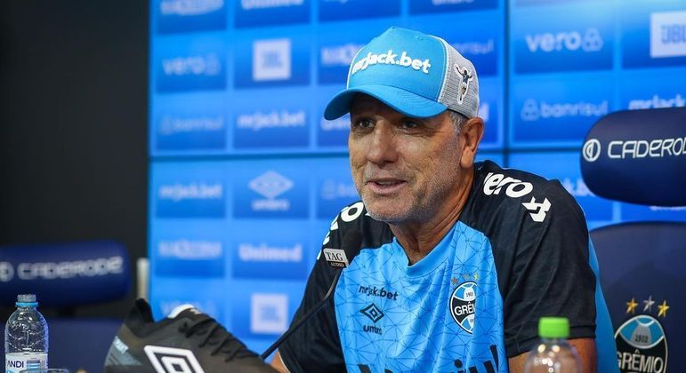
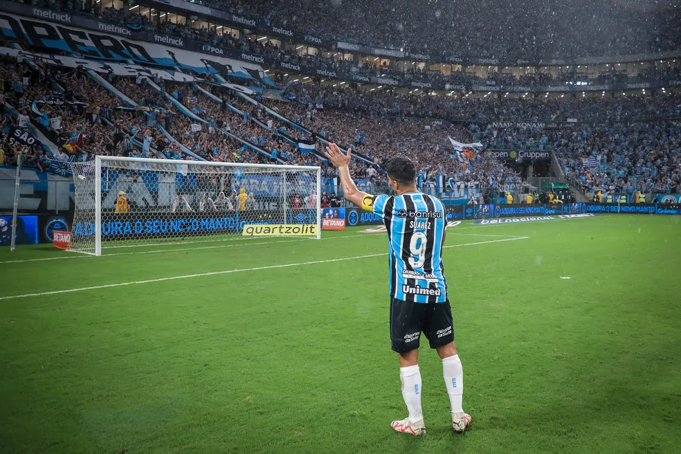

Além do presente, treinador agradeceu a oportunidade de poder trabalhar com o atacante uruguaio.
Veja MaisO atacante Luis Suárez do Grêmio abordou sua boa relação com o volante Thiago Santos, figura pouco querida entre os torcedores gremistas.
Veja MaisDispensas, empréstimos, transferências, sondagens e reforços. Saiba tudo sobre as movimentações do Tricolor no mercado.
Veja Mais
Quem analisa futebol corre riscos todos os dias. Como seu ofício inclui projetar acontecimentos antes que aconteçam, a margem de erro é grande. Por isso, o comentarista se dá o direito de jogar confete para cima quando acerta a tese.
Veja Mais